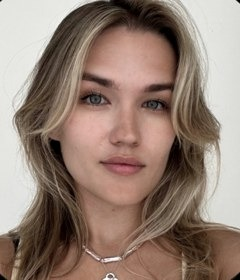

Technische Mitgründerin. ISO‑27001-Fachleute plus lokal laufende KI: Kleinere Unternehmen werden schneller und günstiger zertifiziert.
3 Gründer:innen · Pilotunternehmen stehen bereitPilotunternehmen werden
Ich baue ML-Systeme von Anfang bis Ende und erkläre sie den Menschen, die dafür bezahlen.
jetzt: ISOcopilot-Pilotprojekte · Helmholtz-Manuskript · Masterarbeit an der TUM

Avelios, Yandex, Spiralab, Antireflux-Kliniken, Österreichisches Gesundheitssystem
Technische Mitgründerin. ISO‑27001-Fachleute plus lokal laufende KI: Kleinere Unternehmen werden schneller und günstiger zertifiziert.
Begleitet Betroffene und Angehörige durch die erste Zeit der Verunsicherung nach einer Krebsdiagnose.
Tech Lead · Medizin‑KI‑Startup12 LLMs aus verschiedenen Kulturen debattieren ethische Dilemmata und fällen ein Urteil.
react · fastapi · openrouterRAG mit lokalem LLM, das Krebspatienten medizinische Befunde erklärt.
ollama · pydantic · ragKurze KI-Filme über die Geschichten hinter Gemälden; eine iPhone-App entsteht.
ki-video · ki-audio · iosAußerdem: Axiora, ein Copilot für den EU AI Act · sieben eigene LLM-Agenten
Manuskript in Vorbereitung.
ML-Diagnostik für Munderkrankungen, aus dem System bei SPLAT. Erstgenannte Erfinderin.
Peer-Review-Publikation.
Forschungsprojekt in Zusammenarbeit mit einer Klinikgruppe.
M.Sc. Data & Society
angewandte KI · generative & agentische KI · datengetriebene Systeme · KI-Regulierung
B.Sc. Software Engineering, Nebenfach KI · Fakultät für Informatik
c# · c++ · python · algorithmen · machine learning
Alma Mater Studiorum (gegr. 1088) · Austauschsemester
ki in der industrie · big data & text mining · advanced programming
Englisch C1 (IELTS 8.0) · Deutsch B2 · Russisch Muttersprache
Vier Jahre Schauspielschule, jedes Jahr unter den ersten drei bei einem Festival in Bulgarien. Dort habe ich gelernt, ein Publikum zu halten.
Ein Semester in Bologna, der Umzug nach München, Deutsch von Grund auf. Unterwegs lerne ich am schnellsten.
Epochen, die Absicht der Künstler, Kunst als politischer Hebel. Daraus wurde ein Projekt: Kurzfilme über Gemälde.
Eigentlich wollte ich Anwältin werden, bis die Algorithmen gewannen. Der Sinn für Fairness blieb; deshalb ist mir KI-Regulierung wichtig.
Preisträgerin bei offiziellen Mathe- und Informatik-Olympiaden am Mathe-Lyzeum, danach Yandex Lyceum. Dort haben mich Algorithmen gepackt.
Karrieretage an der HSE mit über 1.000 Besuchern am Tag, das BMSL Innovation Team, ein Sieg beim BioHack.